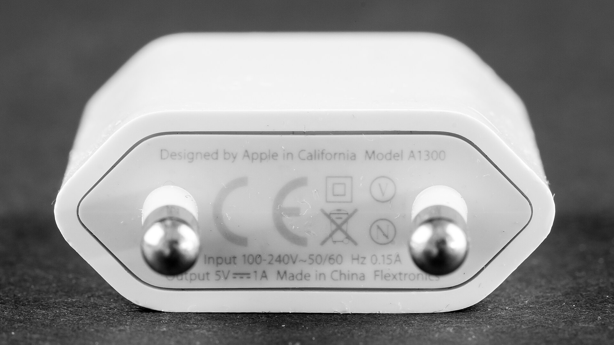
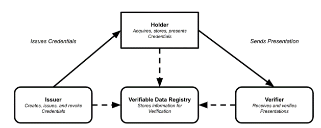

Hangzhou (🇨🇳), 05 September 2025
Legislation introduces requirements aiming to enhance products and services for:
Legislation introduces requirements aiming to enhance products and services for:
Directive 2016/2102/EU on accessibility for public sector and high-impact businesses
Directive 2019/882/EU
European Conformity Marking
CE marking indicates a product meets the health, safety, and environmental requirements of the European Economic Area
Dominant services (e.g., browsers, search engines, marketplaces, ads, OSs, cloud services , social networks, communication…)
Data sharing of IoT devices and cloud services
W3C's standards for interoperability (e.g., XML, RDF, JSON-LD, OWL…).
27+ official EU Digital Identity (EUDI) Wallets to be released in Q4.2026
Interoperable: ISO mDL, W3C VC, JSON-LD
Alignment to worldwide legislative/technical requirements on:
^ W3C Principles
Martin Alvarez (@espinr)
This Presentation: https://espinr.github.io/talks/2025/0905-Global-Expansion
To start the slide show, press ‘A’. Return to the index with ‘A’ or ‘Esc’. On a touch screen, use a 3-finger touch. Double click to open a specific slide. In slide mode, press ‘?’ (question mark) to get a list of available commands.